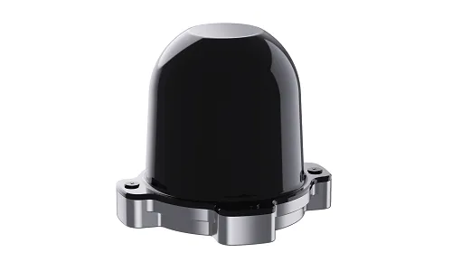

Hesai — Profile
Shanghai's global #1 in ADAS LiDAR and its robotics push.
Chinese companies make roughly 95% of the world's automotive LiDAR — and they are now powering the eyes of robots. Meet the suppliers and the technology race behind them.

Searching for "Chinese LiDAR suppliers" usually starts with a car question — but the fastest-growing answer is now about robots. Chinese companies made roughly 95% of the world's automotive LiDAR in 2025, and that same hardware is becoming the default eye for humanoids, robot dogs, lawnmowers and warehouse bots. Here is who makes it.
LiDAR used to be a niche, Velodyne-dominated market with five-figure price tags. China flipped it into a commodity by controlling three things at once: chip design (SPAD-SoC), manufacturing scale and brutal cost engineering. RoboSense's average selling price fell 52% year-on-year in early 2026 to about US$197 — at that price, LiDAR stops being a luxury and becomes a standard robot component.
| Company | Hesai (禾赛) | RoboSense (速腾) | Seyond (图达通) |
|---|---|---|---|
| HQ | Shanghai | Shenzhen | Shanghai |
| Automotive share | #1 (~51-55% in 2026) | #4 (~12.8%) | #3 (~15.8%) |
| Robotics play | Picasso 6D full-color, FTX | #1 in global robot LiDAR (GGII Q1 2026) | Robin series, long-range |
| Key tech | SPAD-SoC, 6D full-color | EOCENE SPAD-SoC, Phoenix/Peacock chips, E2 | Robin, high-end freespace |
| 2026 signal | 51% share Feb 2026, 13 months #1 | H1 719k units (+169.6%), robotics +510% | Q2 +385% YoY |
Hesai is the global #1 in ADAS main LiDAR, holding roughly 51% of the Chinese market by February 2026 and 13 consecutive months at the top. It shipped more than 40% of the market in 2025 and pioneered the "6D full-color LiDAR" era with its in-house Picasso SPAD-SoC, which fuses point clouds with RGB for what it calls spatial intelligence. Its ATX unit broke into Japan's Toyota ecosystem — a rare foreign win for Chinese sensor makers.
RoboSense (HKEX: 2498) is the most important name in robot LiDAR right now: it ranked #1 globally in robotics LiDAR shipments in Q1 2026, and its robotics business grew 510% year-on-year in H1 2026 while total sales hit 719,200 units (+169.6%). Its E1R all-solid-state LiDAR — compact, cheap and automotive-grade — is inside robot lawnmowers, cleaning bots and humanoids, with a record three-year, 1.2-million-unit order from KUMAR in 2025. The E2 and its EOCENE SPAD-SoC chips (Phoenix, Peacock) push robot perception toward image-grade 3D.
Seyond holds third place (~15.8%) with its long-range Robin series and is the fastest-growing premium player (+385% in Q2 2026). Huawei is the other giant — it pairs LiDAR with its own vehicle compute, holding roughly 24-26% share and shaping the market through its broader intelligent-driving ecosystem. Together Hesai, Huawei, Seyond and RoboSense control well over 90% of the market.
Beyond the auto giants, a second tier feeds robots directly: Slamtec (思岚) in Shanghai dominates 2D LiDAR for AMRs and vacuums, and YDLIDAR supplies low-cost 2D units from a few dollars up for makers and education robots. For robotics buyers, the split is simple: 2D LiDAR from Slamtec/YDLIDAR for indoor navigation; 3D solid-state from RoboSense/Hesai for perception-heavy machines.
The humanoid and quadruped boom needs cheap, reliable 3D perception. Unitree ships its own 4D LiDAR; RoboSense and Hesai are betting their automotive-scale economics will make "eyes" cheap enough for every robot. China's LiDAR duopoly is exporting its car-supply-chain playbook to robotics — the same story as harmonic drives and dexterous hands: components that used to be exotic are becoming commodities built at Chinese scale.
Shanghai's global #1 in ADAS LiDAR and its robotics push.
Shenzhen's robot-LiDAR champion and its EOCENE chip architecture.
The stereo-vision alternative to LiDAR from the same sensor ecosystem.
The other component supply chain deciding the humanoid race.
Profiles, product pages and supplier analysis for China's robotics ecosystem.